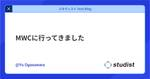

企業テックブログRSS
フィード
人気フィード
ブログ一覧
スタディスト Tech Blog - Medium
https://studist.tech?source=rss----1b85cc1f989a---4
スタディストがお届けする発展と成長の物語。技術、デザイン、組織、マネジメントなどを発信します。.
フィード

MWC に行ってきました
スタディスト Tech Blog - Medium
2日前
Jetpack Composeをアップデートしたらバグったけどなんかよくわからん方法でバグが発生しなくなった話
スタディスト Tech Blog - Medium
8日前
【イベントレポート】CHIYODA Tech #3 OSSの活用と貢献 ～各社のOSSとの付き合い方を話します～
スタディスト Tech Blog - Medium
17日前
【2024年2月テックブログまとめ】今月はカンファレンス関連の記事多数！計5本の記事を公開
スタディスト Tech Blog - Medium
22日前
入社オンボーディングを振り返って
スタディスト Tech Blog - Medium
1ヶ月前
初めてのテックカンファレンス YAPC::Hiroshima 2024に参加した感想
スタディスト Tech Blog - Medium
1ヶ月前
YAPC::Hiroshima 2024に参加しました！#yapcjapan
スタディスト Tech Blog - Medium
1ヶ月前
2024 年 2 月以降の Gmail のメール送信者のガイドラインに沿うために開発本部でやったこと
スタディスト Tech Blog - Medium
2ヶ月前
【イベントレポート】あなたの会社はどうしてる？をゆるくきける相談会〜Mobile編〜
スタディスト Tech Blog - Medium
2ヶ月前
なぜ私たちがYAPC::Hiroshima 2024にスポンサーするのか
スタディスト Tech Blog - Medium
2ヶ月前